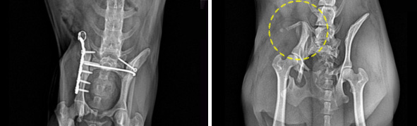
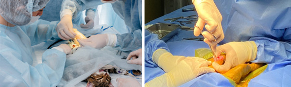

가족과 함께 평생을 함께하는 반려동물.
소중한만큼 건강을 챙겨주는 일도 최선을 다해야합니다
ANYPET ANIMAL HOSPITAL
가족과 함께 평생을 함께하는 반려동물.
소중한만큼 건강을 챙겨주는 일도 최선을 다해야합니다
ANYPET ANIMAL HOSPITAL
C-arm, 미세수술현미경을 비롯한 첨단 정형, 신경외과 장비와 기구들을 갖추고 있는 양압수술실입니다. 각종 정형외과(사지골절, 무릎뼈 탈구, 십자인대 단열, 고관절이형성) 및 신경외과(환축추아탈구, 추간판탈출증) 질환에 대한 수술을 실시하고 있습니다. 자가해면골이식, 동종골이식, 골수 및 혈소판농축혈장을 이용한 적극적인 치료도 실시하고 있으며, 줄기세포를 이용한 재생치료에 대한 임상연구도 활발히 진행하고 있습니다.
흉부외과에서는 선천성 심장혈관 기형으로 동맥관개존증, 우대동맥궁잔존증을 비롯하여 폐염전, 폐농양, 흉강 내 식도이물, 허니아 등에 대한 수술을 실시하고 있습니다. 복강외과에서는 소화관 내 이물, 장중첩, 탈장, 간문맥이상, 결석 등에 대한 수술이 실시됩니다. 그리고 외과적 절제가 필요한 각종 종양에 대한 수술도 실시합니다.
주로 연부 조직에 대한 수술을 진행합니다. 소화기계, 호흡기계, 비뇨기계, 간담도계, 이비인후과 수술이 진행됩니다.
최근 들어 개나 고양이의 척추 질환 발생이 급증하고 있는데 이는 고령화된 나이와 연관을 지을 수도 있지만 척추의 연골이 쉽게 변성되는 품종의 증가도 큰 원인이 됩니다. 디스크라고 불리는 이 구조는 척추 마디마다 위치해서 척추의 움직임에 대한 충격을 흡수하는 구조입니다. 디스크가 변성되어 척수강내로 변위되어 압박 요인이 되면 심한 통증이나 후지의 마비를 일으키게 됩니다. 추궁절제술(laminectomy)을 실시하며 추궁절제술로 증가된 비정상적인 압력의 해소와 원인 디스크 물질의 제거가 같이 시도됩니디.
Copyrights (C) 2020 Veterinary Medical Teaching Hospital. Anypet Animal Hospital All Rights Reserved.
979-742 . 경기도 용인시 수지구 만현로 9 애니펫동물병원 tel . 031-265-8661 FAX . 031-256-8662 EMAIL . anypet@suy.ac.kr